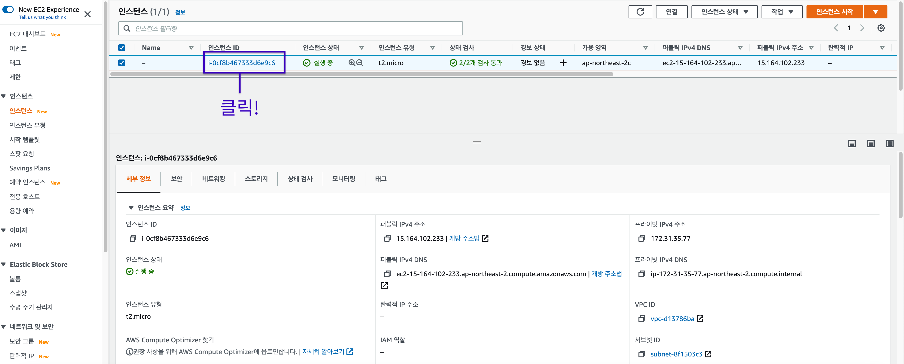
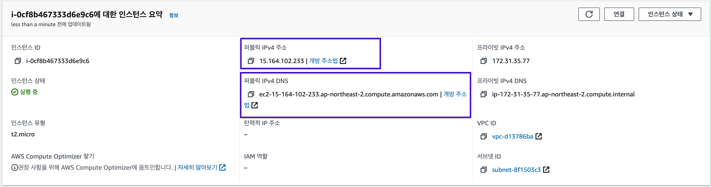
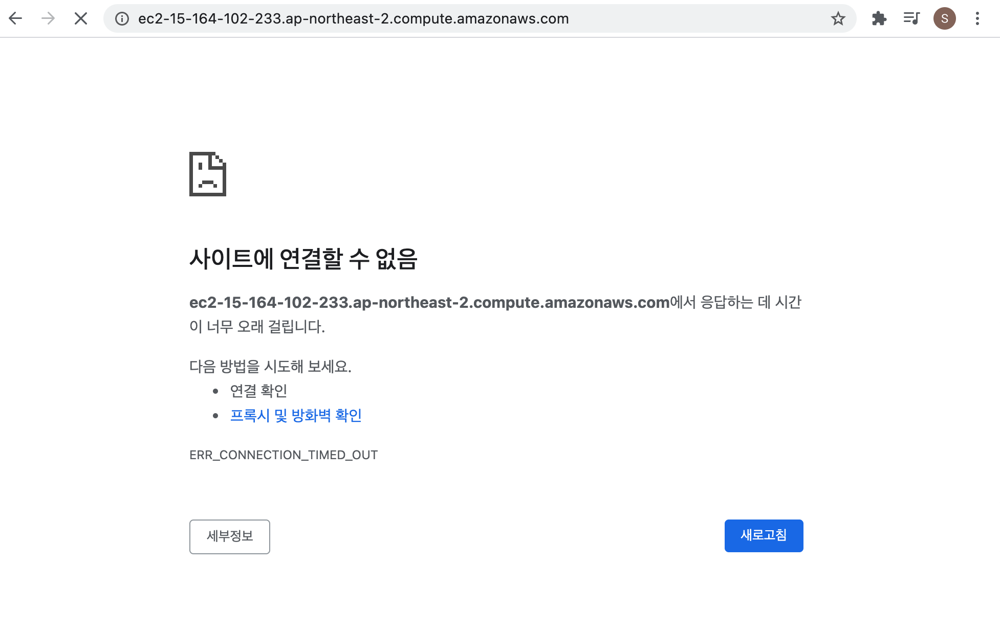

보안 그룹
1. EC2 Instance IP 주소 접근
EC2 인스턴스의 IP 주소로 접근해서 정상적으로 접근 가능한지 확인한다.
IP 주소는 EC2 대시보드에서 생성한 EC2 인스턴스를 클릭하면 확인할 수 있다.

아래 화면에서 보라색으로 강조된 부분을 보면 두 가지 형태의 주소가 존재하는 것을 확인할 수 있다.
퍼블릭 IPv4 주소와 퍼블릭 IPv4 DNS는 형태만 다를 뿐 같은 주소로 둘 중 어떤 주소를 사용하여도 문제가 없다.

EC2 인스턴스의 IP 주소로 접속하면 로딩 끝에 아래와 같은 오류 메세지지가 보인다.

위 오류 메세지가 보이는 이유는 아직 보안 그룹 설정을 하지 않았기 때문이다.
2. 보안 그룹
보안 그룹이란 인스턴스로 들어가고 인스턴스에서 나가는 트래픽에 대한 가상 방화벽이다.
인스턴스로 들어가는 트래픽은 인바운드라고 하며 인스턴스에서 나가는 트래픽을 아웃바운드라고 한다.
인바운드 규칙
인바운드 규칙은 EC2 인스턴스로 들어오는 트래픽에 대한 규칙이다.
인바운드 규칙에 허용되지 않은 규칙은 인스턴스로 접근하지 못하도록 필터링 된다.
EC2 인스턴스를 생성하면 기본적으로 SSH 접속을 위한 SSH 규칙만 생성되어 있다.
아웃바운드 규칙
아웃바운드 규칙은 EC2 인스턴스에서 나가는 트래픽에 대한 규칙이다.
EC2 인스턴스를 생성하면 기본적으로 나가는 모든 트래픽을 허용한다.
3. 보안 그룹 설정

인스턴스 탭의 우측에서 해당 인스턴스가 어떤 보안 그룹에 속해 있는지 확인할 수 있다.

보안 그룹 탭에서 인스턴스 탭에서 확인한 보안 그룹을 클릭하면 해당 보안 그룹의 규칙을 설정할 수 있다.

인바운드 규칙 탭에서 인바운드 규칙 편집 버튼을 클릭하여 인바운드 규칙을 설정할 수 있다.

인바운드 규칙은 필요에 따라 규칙을 추가하고 제거하는 과정이 자유롭다.
규칙 추가 버튼을 눌러 규칙을 추가할 수 있다.

EC2 인스턴스에서 실행 중인 서버가 인터넷에서 요청을 받을 수 있도록 인바운드 규칙을 설정해야 한다.
인바운드 유형과 이때 허락하는 포트의 범위를 지정한다.

보안 그룹은 소스에 따라 인바운드/아웃바운드 요청을 허락할 수도 거절할 수도 있다.
위 사진에서 표시된 부분은 모든 주소에 대해 요청을 허락하는 설정이다.
이때 소스는 특정 보안 그룹 일수도 있고 특정 IP 주소일 수도 있다.
규칙 저장 버튼을 누르면 보안 그룹을 설정하는 과정이 완료된다.